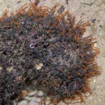
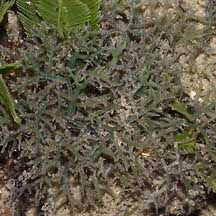
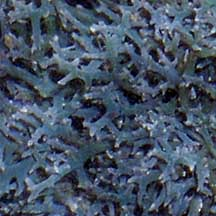
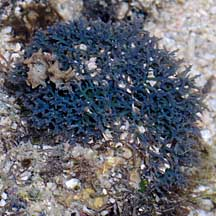
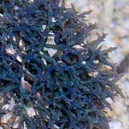
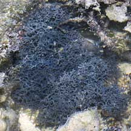
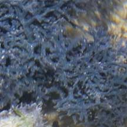
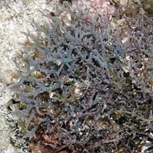
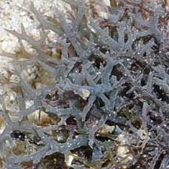

|
|
| red seaweeds text index | photo index |
| Seaweeds > Division Rhodophyta > genus Hypnea |
| Bushy
ball red seaweed Hypnea pannosa* Family Cystocloniaceae updated Jan 13 Where seen? Dense balls of this seaweed is sometimes seen on some of our Southern shores, growing on coral rubble. Features: Dense bushy balls about 6-8cm in diameter made up of very short cylindrical blades that branch thickly with tapering tips. Colours often blue or bluish, sometimes green. Usually in small clumps, but sometimes covering a larger area of about 20cm. Human uses: Some species are fed to livestock, eaten by people, used as fertiliser and believed to have medicinal properties. |
 Pulau Hantu, Aug 04 |
|
 Sentosa, Oct 03 |
 Labrador, Apr 05 |
 |
*Seaweed species are difficult to positively identify without close examination.
On this website, they are grouped by external features for convenience of display.
| Bushy ball red seaweeds on Singapore shores |
| Photos of Bushy ball red seaweeds for free download from wildsingapore flickr |
| Distribution in Singapore on this wildsingapore flickr map |
| Other sightings on Singapore shores |
 Pulau Salu, Jun 10  |
 Pulau Salu, Aug 10  |
 Pulau Senang, Aug 10  |
Links
|